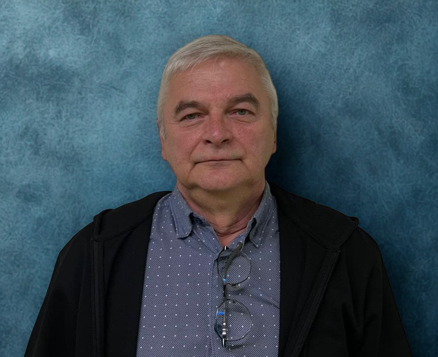

"Sāksim turpināt!"
Siguldas pilsētas vidusskolā strādā no 2011.gada
Intervētāja Laine Mūza
Cik gadus jūs strādājat Siguldas pilsētas vidusskolā?
Siguldas pilsētas vidusskolā strādāju piecpadsmit gadus, bet pedagoģijā esmu nu jau vairāk nekā divdesmit gadus. Skola šajā laikā ir ļoti mainījusies, taču viena lieta ir palikusi nemainīga - darbs ar cilvēkiem un nepārtraukta attīstība.
Kas jūs iedvesmoja kļūt par skolotāju?
Par skolotāju es kļuvu nejauši. Sākumā nemaz neplānoju strādāt skolā. Pirms tam strādāju bērnu namā, un tieši tur guvu nozīmīgu pieredzi darbā ar jauniešiem. Tad man negaidīti piedāvāja darbu skolā, un lēmums tika pieņemts faktiski dienu pirms jaunā mācību gada sākuma. "Viena lieta ir zināt, otra - iemācīt," tāpēc sākumā tas bija liels izaicinājums.
Kādus priekšmetus jūs esat mācījis?
Savas karjeras laikā esmu mācījis informātiku, programmēšanu, datoriku un tehnisko grafiku. Katrs mācību gads ir citāds, un, kā es mēdzu teikt: "Katru reizi tas pats, bet vienmēr citādi."
Kā jūs raksturotu savu darba pieredzi skolā?
Mana darba pieredze ir bijusi ļoti daudzveidīga. Sākumā nebija pedagoģiskās izglītības, tāpēc daudz ko nācās apgūt praksē. Ar laiku ieguvu pieredzi un sapratu, cik svarīgi ir spēt pielāgoties dažādām situācijām un cilvēkiem.
Kas jums visvairāk patīk darbā skolā?
Man patīk tas, ka darbs nekad nav vienveidīgs. Katru dienu ir jauni izaicinājumi, situācijas un cilvēki. Patīk arī iespēja palīdzēt skolēniem un kolēģiem.
Kas jūs motivē turpināt šo darbu?
Motivē sajūta, ka mans darbs ir vajadzīgs. Patīk redzēt, ka skolēni attīstās, apgūst jaunas prasmes un vēlāk tās izmanto dzīvē.
Kā jūs raksturotu mūsu skolas skolēnus?
Skolēni būtībā nemainās. Katrā paaudzē ir gan centīgi un ieinteresēti jaunieši, gan tādi, kuriem mācības sagādā grūtības. Svarīgi ir saprast paaudžu atšķirības un neuztvert tās personīgi.
Vai skolēni gadu laikā ir mainījušies attieksmes ziņā?
Mūsdienu skolēni daudz vairāk paļaujas uz tehnoloģijām. Dažreiz tas palīdz, bet citreiz samazina vēlmi domāt patstāvīgi. Tāpēc skolotājiem jāpalīdz atrast līdzsvaru starp tehnoloģiju izmantošanu un domāšanas attīstīšanu.
Kā tehnoloģijas ir ietekmējušas mācību procesu?
Tehnoloģijas ir kļuvušas par neatņemamu izglītības daļu. Tomēr "tehnoloģijas ir palīglīdzeklis, nevis pamats." Ir svarīgi saglabāt spēju domāt pašiem un darboties arī bez tehnoloģiju palīdzības.
Kāds ir bijis lielākais izaicinājums jūsu darbā?
Lielākais izaicinājums bija pats kļūšanas process par skolotāju. Tāpat izaicinājums ir nepārtrauktās pārmaiņas izglītības sistēmā un biežā mācību programmu maiņa.
Kādi sasniegumi jums palikuši atmiņā?
Īpaši atmiņā palikuši skolēnu panākumi olimpiādēs, īpaši informātikas jomā. Lai gan rezultāti varbūt nav bijuši valsts līmeņa izcilākie, tie apliecina ieguldītā darba nozīmīgumu.
Kā jūs raksturotu skolotāju kolektīvu?
Skolā strādā daudz dažādu cilvēku, un sadarbība ir ļoti svarīga. Ikdienā daudz palīdzam viens otram, jo bez komandas darba skolas dzīve nav iedomājama.
Vai jums ir kāds īpašs teiciens vai atmiņā palicis moments?
Ikdienā darba ritmu bieži raksturo humors. Viens no maniem biežāk lietotajiem teicieniem ir: "Sāksim turpināt!"
Kā jūs redzat skolas nākotni?
Ceru, ka nākotnē izglītības sistēma kļūs stabilāka un pārdomātāka. Svarīgi ir nodrošināt kvalitatīvas pamatzināšanas un nepārslogot skolēnus ar pārāk sarežģītu saturu.
Ko jūs novēlētu nākamajām skolēnu paaudzēm?
Jāmācās visu mūžu. Pasaule nepārtraukti mainās, tāpēc svarīgi ir būt zinātkāriem, neatlaidīgiem un neapstāties pie sasniegtā. "Visu laiku jācenšas iet uz augšu un uz priekšu."
SĀKUMS